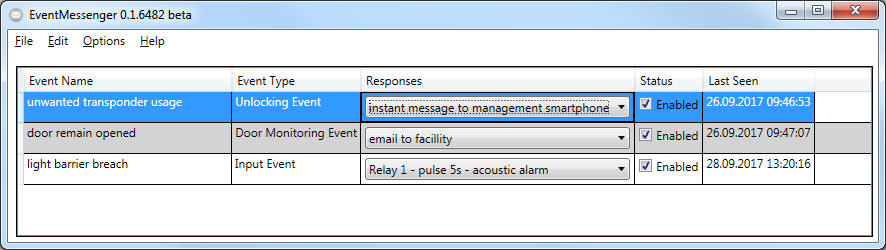

Welcome to the integrated Help of the EventMessenger Software
The Aim of the EventMessenger Application is to provide the ability to retrieve events from your SimonsVoss Locking System and its LSM.Basic.Online Locking System Management Software and to perform various actions, such as - among others - sending emails. Please have a closer look now to learn how to use this software.